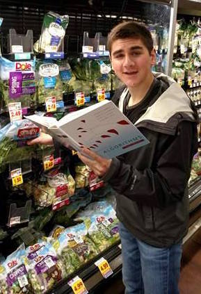

|  |
Jack Kosaianjkosaian at cs.cmu.edu[CV] I am a fourth-year Ph.D. student in the Computer Science Department at Carnegie Mellon University, where I am fortunate to work with Rashmi Vinayak as part of the Parallel Data Lab.
I was previously an undergraduate at the University of Michigan, where I worked with Mosharaf Chowdhury. |
I have been fortunate to be a teaching assistant for the following courses: